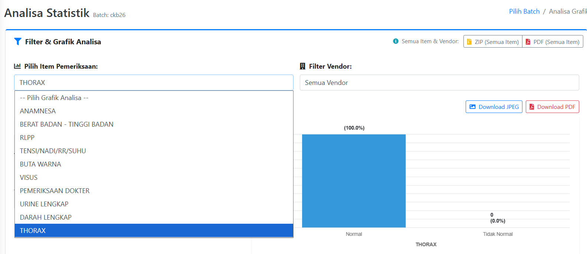
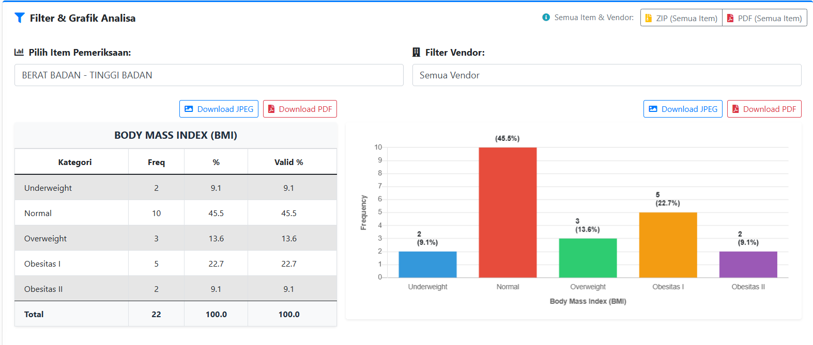
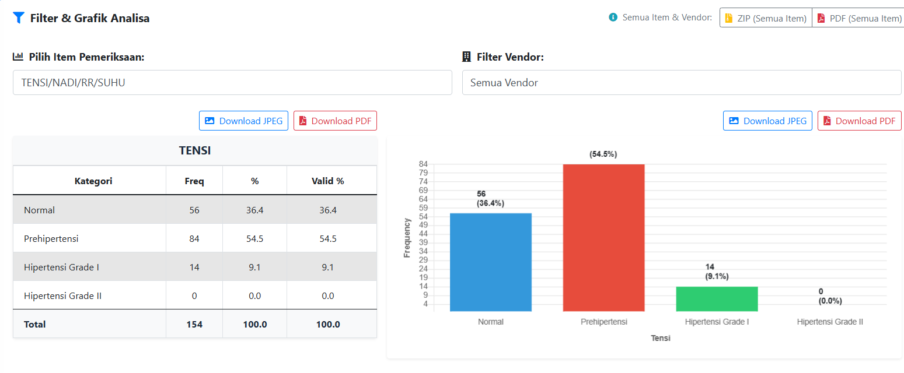
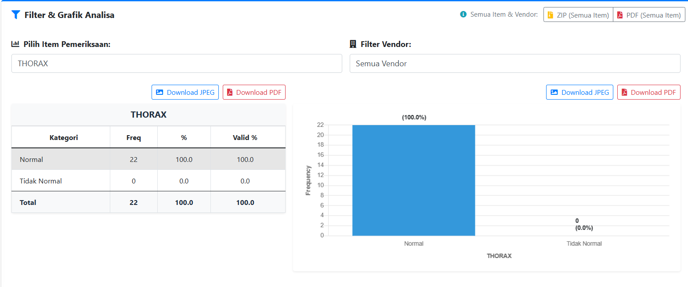

Client Access
Setiap klien memiliki akses tersendiri sesuai dengan pemeriksaan dan layanan yang dilakukan.
Sistem informasi laboratorium PT. Global Sejahtera Abada yang mendukung pengelolaan data pemeriksaan, analisis statistik, serta akses laporan klien sesuai layanan dan hak akses yang diberikan.
Client Access: setiap klien memperoleh akses sesuai pemeriksaan dan layanan yang dilakukan.

LIS mendukung kebutuhan informasi pemeriksaan klien melalui data yang terstruktur dan tampilan analitik yang mudah dipahami.
Setiap klien memiliki akses tersendiri sesuai dengan pemeriksaan dan layanan yang dilakukan.
Akses terhadap item pemeriksaan sesuai layanan yang tersedia bagi masing-masing klien.
Data pemeriksaan dapat dianalisis berdasarkan item pemeriksaan dengan frekuensi dan persentase.
Hasil analisis disajikan dalam bentuk grafik untuk membantu melihat distribusi hasil pemeriksaan.
Informasi hasil dan analisis dapat digunakan untuk kebutuhan laporan klien sesuai hak akses.
Sistem menyediakan opsi export yang terlihat pada modul, termasuk PDF, JPEG, dan ZIP.
Berikut contoh tampilan LIS berdasarkan modul analisa yang digunakan untuk mengolah data pemeriksaan.



Setiap klien memiliki akses tersendiri sesuai pemeriksaan yang diambil. Dengan pendekatan ini, informasi yang tersedia pada portal mengikuti kebutuhan dan kewenangan klien.
Hak akses diberikan sesuai kebutuhan dan kewenangan masing-masing klien.
Login Sistem LIS ↗LIS menjadi bagian dari alur layanan MCU perusahaan, mulai dari data pemeriksaan hingga penyajian informasi yang dapat digunakan klien.
Pelaksanaan pemeriksaan kesehatan sesuai paket dan kebutuhan perusahaan.
Data pemeriksaan masuk dalam proses pengelolaan sistem.
Data dapat dianalisis berdasarkan item pemeriksaan yang tersedia.
Informasi laporan tersedia sesuai layanan dan hak akses klien.
Hasil dapat menjadi bagian dari pembahasan dan program pasca-MCU.
Gunakan portal sistem untuk mengakses informasi sesuai hak akses yang diberikan.
Login Sistem LIS ↗